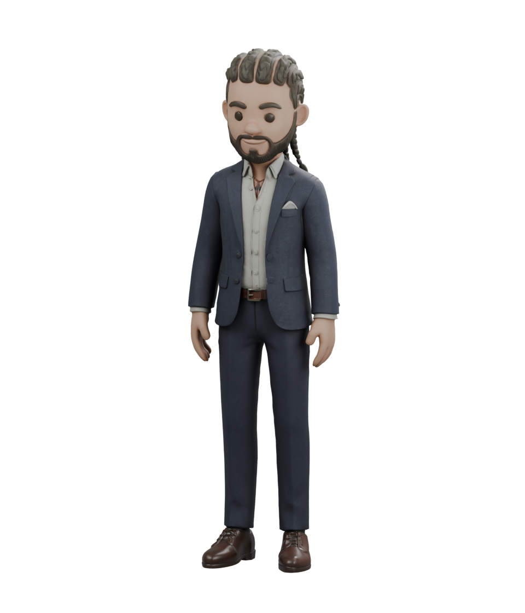

Joshua, in 3D.
Choose a pose, find an angle, and see another side of me.
Bring a little motion.
Save your favorite view.

Loading the 3D avatar…
A cartoon interpretation of me.
Explore my workChoose a pose, find an angle, and see another side of me.
Bring a little motion.
Save your favorite view.

Loading the 3D avatar…
A cartoon interpretation of me.
Explore my work